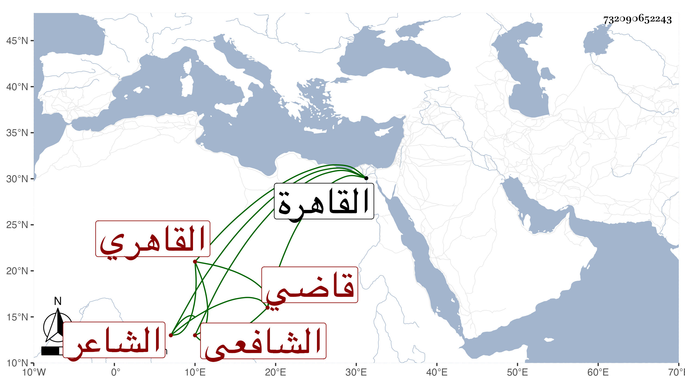

0902Sakhawi.DawLamic.ITO20230111-ara1.EIS1600.732090652243
Biography ID: 732090652243
77
محمد بن أحمد بن كمال الشمس الدجوى القاهري الشافعي الشاعر قاضي الشطرنج . ولد تقريبا سنة اثنتين وسبعين أو قبل السبعين بالقاهرة ونشأ بها فحفظ القرآن واشتغل في فنون ، وفضل ونظم الشعر فأجاد ومدح الأكابر كشيخنا وله في ختم الباري قصيدة نبوية أثبتها في الجواهر ، والكمال بن البارزي وكثر تردده إليه في الشطرنج وكان فائقا فيه بحيث لقب قاضي الشطرنج ، وتكسب مع ذلك بالشهادة سمعت منه قصيدة لامية امتدح بها شيخنا في مجلس الإملاء ، وكان حسن العشرة ظريفا كثير النوادر استجازه شيخنا لولده ، ومات بعد مرض طويل بعلة البطن في ليلة الأربعاء حادي عشر ذي الحجة سنة تسع وأربعين رحمه الله ، ومن نظمه ساقى خمر بيده سبحة :
| يا من غدا في زعمه متنسكا | ومسالك النهم الكبار تدورها |
| فإذا حضرت على المدام بسبحة | وجلست تسقى الخمر كيف تديرها |
وهو في عقود المقريزي فيمن جده كمال الدين فكمال مختصر من لقبه ، وأنشد عنه قوله في شجرة سنط :
| أيا دوحة قامت على الأرض خيمة | ولأن لها الحر الشديد أبو لهب |
| أجت بحمل ورد تبر وسندس | ولكنها للنار حمالة الحطب |
